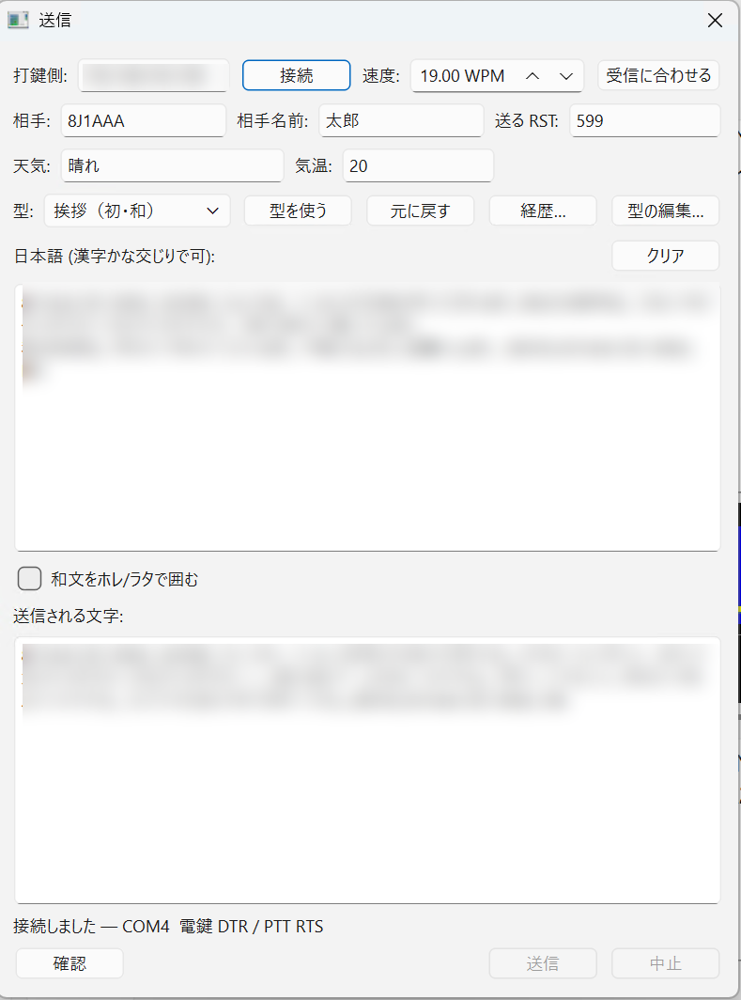
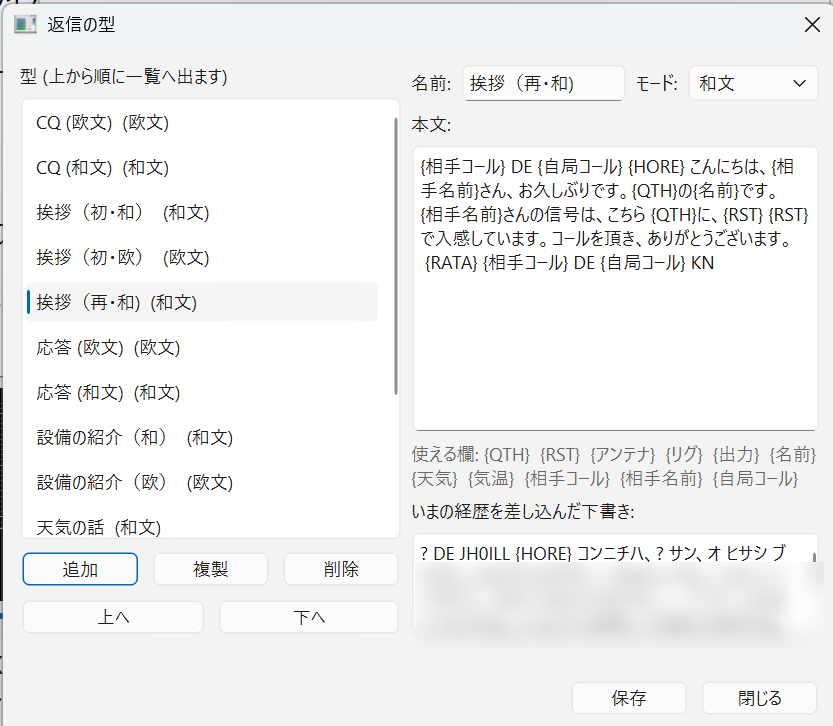
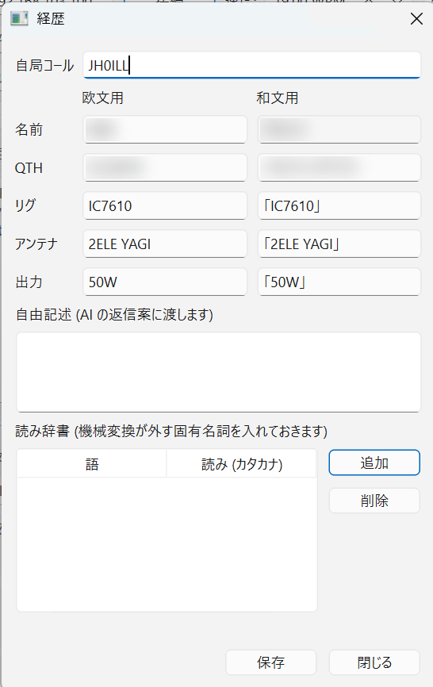

送信する
無線機を繋いだ PC に、LAN 越しで電鍵と PTT を操作させます。 日本語で書いた文がカナに直り、モールスとして打たれます。
無線機 ── 電鍵/PTT ケーブル ── PC-A（打鍵側・cw_key_server.py）
│ LAN（家庭内ネットワーク）
↓
PC-B（cw-decoder 本体・[交信…] の画面）受信の LAN 接続とは別の接続です。 音声を受け取る向きと、文字を送り出す向きが逆になります。
初めて繋ぐとき
無線機の電源を切るか、ダミーロードを付けてから始めてください。 多くの USB シリアル変換器は、ポートを開いた瞬間に DTR/RTS を H にします。 上がると、開いただけでキャリアが出ます。
-
PC-A（打鍵側）で結線を確かめます。テスターか LED を当てて見てください。
python scripts/cw_key_server.py --port COM3 --check-lines電鍵線と PTT 線が 1 秒ずつ交互に ON/OFF します。 上がらない・逆に動くときは
--key-line--ptt-line（ともにDTR/RTS。PTT だけはNONEも選べます）と--key-invert--ptt-invertで直してから、もう一度確かめます。 -
無線機の電源を入れないまま、
--dry-runで通してみます。python scripts/cw_key_server.py --dry-runシリアルに一切触らないモードです。無線機やケーブルが無くても、 PC-B のアプリから「接続 → 文章を書く → 確認 → 送信」を一通り練習できます。
ここまで通ってから、初めて無線機を繋いでください。
--check-lines と --dry-run は同時に使えません
結線の確認には実際のポートが要るためです。組み合わせるとエラーで止まります。
ふだんの使い方
PC-A（打鍵側）で打鍵サーバーを起動します。
python scripts/cw_key_server.py --port COM3起動すると、PC-B のアプリに入れる host:port が表示されます。
結線 : COM3 電鍵 DTR / PTT RTS
待ち受け : 0.0.0.0:45679
アプリの設定に: 192.168.0.10:45679
接続を待っています… (Ctrl+C で終了)PC-B（cw-decoder 本体）で送信の画面を使います。

主画面の 交信… を押します。
-
打鍵側: に PC-A の
host:portを入れて 接続 を押します。接続しました — COM3 電鍵 DTR / PTT RTS -
日本語 (漢字かな交じりで可): に文章を書きます。 下の 送信される文字: に、打鍵側へ渡す形（カタカナ、必要なら符号）が自動で出ます。
-
内容を確かめて 確認 を押します。まだ打鍵しません。 文字数・要素数・所要秒数が出ます。
確認しました — 7 文字 / 63 要素 / 6.3 秒文字数はホレ・ラタをそれぞれ 1 文字と数えます（
{HORE}の 6 文字ではありません）。 速度を変えると秒数も変わるので、速度を変えたら確認からやり直しです。 確認が通って初めて 送信 が押せます。押すと実際に打鍵が始まります。
途中で止めたいときは 中止 です。
編集すると確認は無効に戻ります。 直前に確認した文字列と、いま画面にある文字列が一致しているときしか送れません。 ただしその文字列・速度で一度最後まで送り終えていれば、確認なしで送り直せます （同じ内容の再送は日常的に起きるためです）。
相手の速度に合わせる
速度は 速度: 欄で指定します（5〜40 WPM、初期値 20 WPM）。 ここで選んだ値は保存され、次に開いたときも同じになります。
受信に合わせる を押すと、 主画面の右下に出ている受信 WPM がそのまま入ります。 実受信 90 件で測った誤差の中央値は +1.6% です。
交信データを Hamlog へ渡す
同じ PC で Turbo HAMLOG/Win が動いていれば、 hamlog登録 ボタンで交信データを Hamlog の入力ウィンドウへ渡せます。 コールサイン・日付・時刻（JST）・His/My の RST・周波数・モード（CW）・名前・住所・備考1/2 が入ります。
登録はしません。内容を確かめてから、Hamlog 側で Save を押してください。 cw-decoder と Hamlog は同じ権限で動かしてください（片方だけ「管理者として実行」していると届きません）。
交信欄をまとめて消す
気温欄の右の 交信欄クリア で、 相手コール・相手名前・住所・備考1・備考2・天気・気温がまとめて空になります。 送る RST・もらった RST・周波数は残ります（同じバンド・同じ運用のあいだ変わらないため）。 送信文の 4 つの欄は消えません（それぞれの クリア をお使いください）。
受信本文を右クリックして欄へ入れる
受信本文・欧文ストリーム・清書表示を右クリックすると、選んだ文字を 相手コール / 相手名前 / 住所 / 送る RST / もらった RST の欄へ入れられます。 選ばずに語の上で右クリックするだけでも構いません。 交信ダイアログを開いていなければ、自動で開いてから入ります。
CW では RST の 9 を N と打つのが日常的です
（5NN = 599、57N = 579）。
RST の欄へ入れるときに N → 9 だけを直します。
TU（ありがとう）のように数字を含まない語は RST と見なしません。
和文を受信しているときは、本文がカナで出るためコールサインが読めません。 欧文ストリームの行（同じ符号を欧文表で読んだもの）をなぞって右クリックしてください。
送信欄は 4 つあります
送信画面には 送信文 1〜送信文 4 の 欄が縦に並んでいます。交信中に返信を組み立てる時間はないので、 先に何通か書いて 4 つとも [確認] まで通しておき、相手の信号を 聞いてから合う 1 通の [送信] を押す、という使い方をします。
- 本文・囲みチェック・送信される文字・[クリア] [確認] [送信] [中止]・警告の行は欄ごとです。
- 打鍵側の接続・速度・相手コール・RST・天気・型は4 つの欄で共通です。
- 型と [元に戻す] は最後に本文へ触った欄に効きます。欄をクリックしてから型を選んでください。
打鍵器は 1 台です。送信中は他の欄の [確認]・[送信]・[クリア] も押せなくなります。 [中止] は [送信] の右隣にあり、どの欄のものを押しても同じ 1 通が止まります。
和文をホレ／ラタで囲む
和文をホレ/ラタで囲む にチェックを入れると、 和文の前後にホレ（和文開始）とラタ（和文終了）が自動で付きます。 初期値は OFF です（使うときだけチェック。型を使っても自動では ON になりません）。
コールサインや RST など、A〜Z を含む語は和文の中にあっても自動的に欧文の符号で送ります。
「…」 で囲む必要はありません（囲んでも従来どおり動きます）。
返信の型

{相手コール} のような
差し込み欄を書いておきます。下の枠にはいまの経歴を差し込んだ下書きが出ます
（2 行目以降は個人情報のためぼかしてあります）。
送信の画面の 型: から選んで 型を使う を押すと、 その場で本文に入ります。元に戻す で戻せます。 型の追加・複製・削除・並べ替えは 型の編集… から行います。
差し込める欄
本文に {名前} のように書いておくと、
経歴や画面上部の入力欄から値が入ります。
{QTH} {RST} {アンテナ} {リグ} {出力} {名前}
{天気} {気温} {相手コール} {相手名前} {自局コール}
受信文から取り出しているため、読み取りが崩れていると入りません。
空欄のままだと ? が打たれるので、送る前に 送信される文字: を確かめてください。
経歴

自局の情報を書いておく場所です。送信の画面の 経歴… から開きます。
保存先は ~/.cw-decorder/operator.json です。
以前は 1 つの値と「読み」の組で持っていました。すると
欧文の本文に書いた TARO が読みの タロウ に置き換わり、
カタカナが混ざってモードが和文に倒れ、文中の欧文がまるごと打てなくなるという
不具合が起きていました。2 つに分けたことで、この問題は構造的に消えています。
読み辞書には、機械変換が外しやすい固有名詞を「語 → 読み（カタカナ）」で登録できます。
長い語から先に当てるので、神奈川県 が 神奈川 + 県 に割れることはありません。
送れる文字
漢字かな交じりで書けます。送信の直前にカナへ直され、 送信される文字: にその結果が出ます。 打てない文字があるときは、送る前に理由が画面に出ます。
」 は段落として打たれます
符号 ・-・-・・ は段落（。）です。
見た目が似ているため 」 と書かれることがあるので、別名として通しています。
アプリを使わずに 1 回だけ送る
python scripts/cw_key_server.py --port COM3 --text "CQ CQ DE JH0ILL K" --wpm 20打鍵の途中で接続が切れたときは、打鍵側が電鍵と PTT を必ず落とします。 送信しっぱなしにはなりません。画面には切れた旨が出るので、繋ぎ直してください。